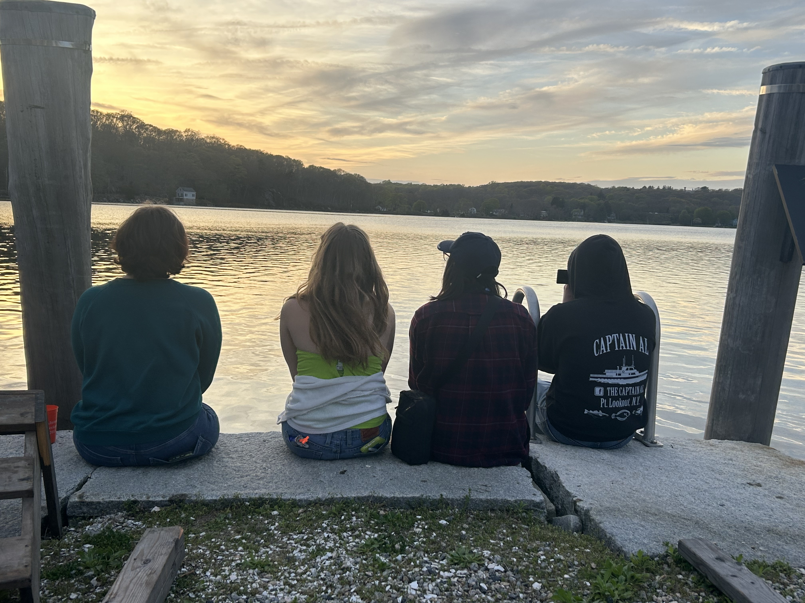
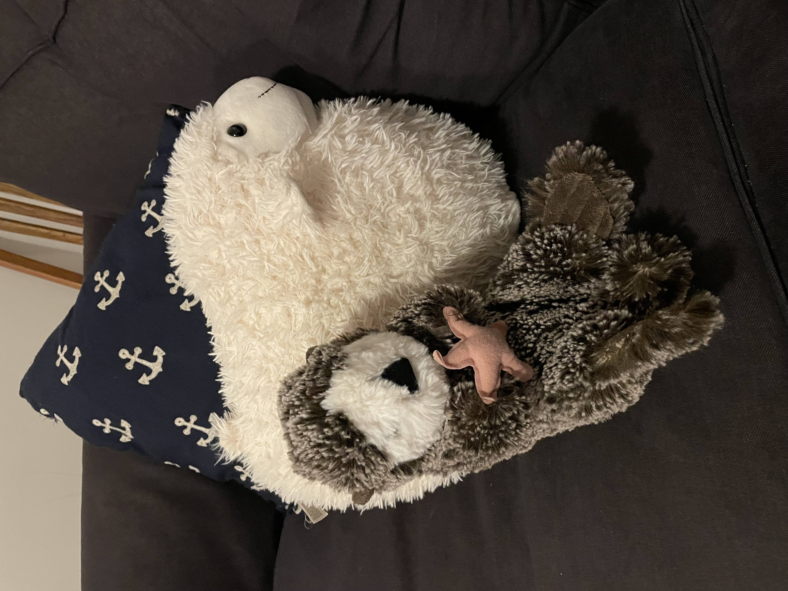

Love letter to Williams-Mystic

I am so happy every day that I chose to go to Williams-Mystic.
What I’ll take away from this semester, more than anything else, is a reassessment of what I value in my life. Williams-Mystic opened possibilities I didn’t know existed. It was everything I hoped it would be and more.
The people I met have a vision for the world they want to live in, and they don’t just dream about it– they build it. In New Orleans, I met people who built a wetland park from a dump, working with few resources and many obstacles, in a neighborhood previously devastated by multiple hurricanes. It took many years, but they made it happen.
I especially loved the scientists I got to speak to. They were so scrappy and resourceful! So willing to jump in and try and make mistakes and learn. That’s the kind of scientist I want to be. I’m thinking of a veterinarian I met at the Monterey Bay Aquarium who treated deep-sea isopods with fungal infections by dissolving medicine intended for human children into honey. She’s just one example. There were so many more.

As for the people I got to know very well on this journey: I don’t know if I can adequately express the impact of the Williams-Mystic community on me. Classmates became friends, faculty and staff became mentors. You’ll just have to trust me that they’re the kind of people I described above; they don’t just dream, they create. I can’t wait to see what they do.
Having met so many different people whose lives are full of joy and meaning has given me the certainty that I can find my way there, too. That isn’t to say the path ahead will be easy or straightforward. But I know who I am. I know I can do this. And that certainty, that faith in myself, is what I had been missing for so long.
